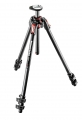

器材库 > 脚架 > MT 190 CXPRO3-CN

详细规格
发布日期
2013-11-22
厂家推荐价格
2,925.00 （人民币）
产品类型
三脚架
材质
碳纤维
节数
3
最大管径
24.8mm
最小管径
16mm
折合高度
610mm
最高工作高度
1600mm / 不升中轴：1350mm
最低工作高度
90mm
最大负重
7kg
自重
1.6kg
云台
无
快装板
无
1472583692014-05-19 11:424.92 分
操作性 5.00功能性 5.00美观性 5.00趣味性 5.00耐用性 5.00性价比 4.50
thesiren2014-05-16 17:294.67 分
操作性 5.00功能性 5.00美观性 5.00趣味性 5.00耐用性 5.00性价比 3.00
御风行2014-05-16 10:224.92 分
操作性 5.00功能性 5.00美观性 5.00趣味性 5.00耐用性 5.00性价比 4.50
电侠魅影2014-05-15 17:544.67 分
操作性 5.00功能性 5.00美观性 5.00趣味性 4.50耐用性 4.50性价比 4.00
产品图 / 样片
MT 190 CXPRO3-CN
评测 / 相关文章
- 详细内容 （存档）